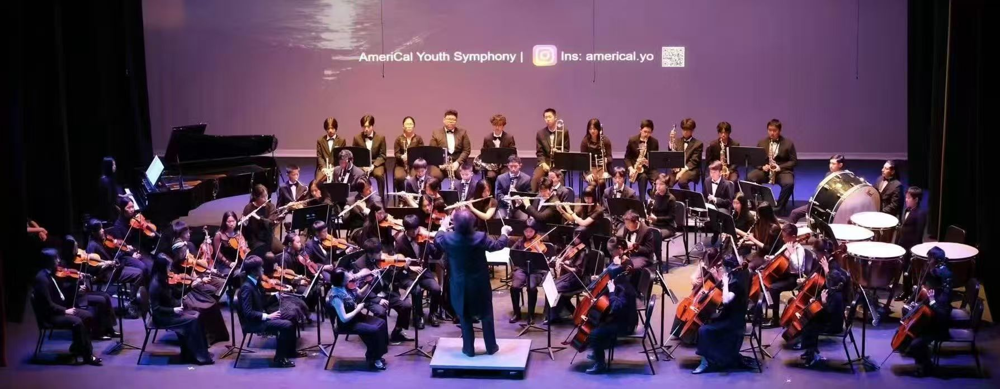
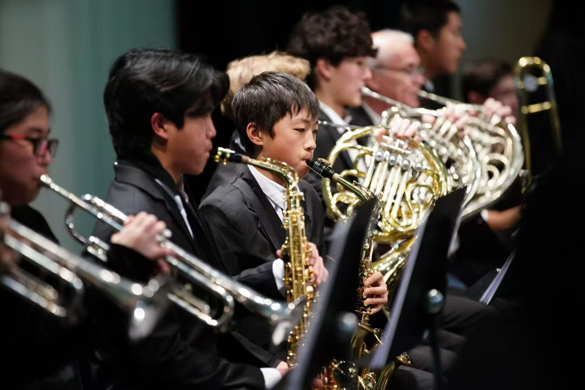
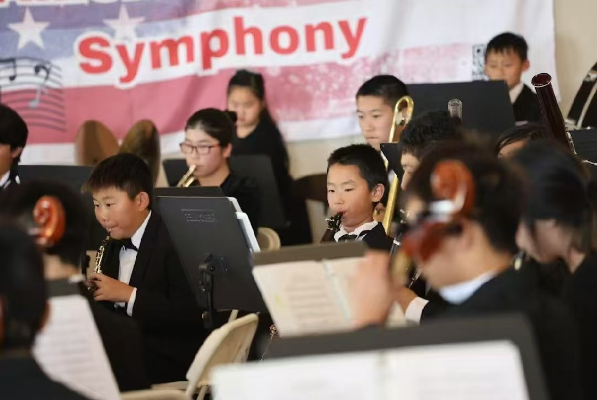
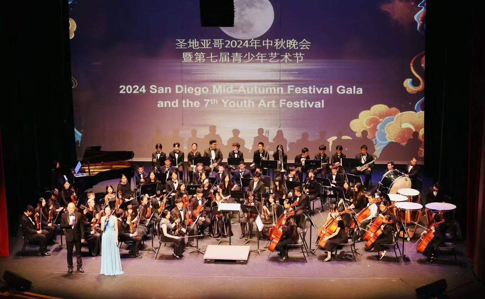
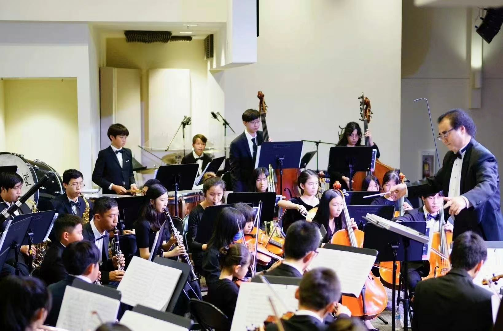
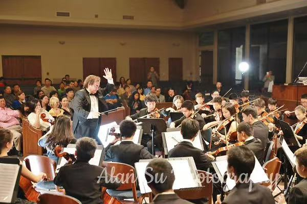

← All eventsStep inside
Educational · Open to the public
Step inside
the orchestra.
See how a conductor guides young musicians, shapes musical ideas, and brings a full ensemble together.
Register by emailEvery Saturday
7–9pmWatch music take
shape in real time.
Our educational rehearsals welcome the community into a live, working rehearsal—an opportunity to listen, learn, and experience ensemble music up close.
WhenEvery Saturday, 7:00–9:00 pm
WhereSorrento Valley, San Diego
AdmissionFree · Registration required
Presented bySan Diego Public Library & AmeriCal Youth Symphony
Register by email before attending. Location details will be confirmed with your registration.
Request a placeFrom rehearsal to performance
Get ready
for the stage.
Every rehearsal builds toward the moment the lights rise and the orchestra shares its music with an audience.





